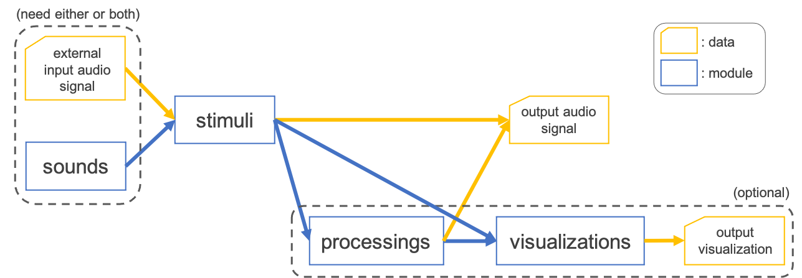

Customize Output¶
You can generate any type of stimulus by customizing configuration file. Before explaining how to set up the configuration, we will first introduce the toolkit architecture.
Overview of toolkit architecture¶
In ASPEN, the output is defined by four module:
A series of each module is proceeded sequentially and the processing flow is illustrated schematically in the following figure:

A brief descriptions of each module are:
Module |
Description |
Reference |
|---|---|---|
sounds |
Define a generation of fundamental sound signal (e.g. pure tone, noise) inputted to stimuli |
|
stimuli |
Define a transformation of input signal specified by external signal and/or generated signal from sounds |
|
processings |
Define a postprocessing (e.g. applying a ramp function) to finalize an auditory stimulus (optional) |
|
visualizations |
Define a visualization of output stimulus (optional) |
Customize configuration¶
In order to configure the aforementioned modules, you need to set up a YAML file.
Customize stimuli¶
For example, as shown in previous section, we could generate an iterated rippled noise (IRN) with \(F0=1000[Hz]\) based on the configuration file:
# general setting
stimulus-module: iterated_rippled_noise
samp-freq: 48000
outdir: "data/iterated_rippled_noise"
suffix: iter8_delay1
# sounds setting
sound-generation-pipeline: [colored_noise]
colored-noise-color: [white]
colored-noise-duration: [1000]
colored-noise-num-signals: 1
# stimulus setting
num-iteration: 8
delay: 1
# postprocessings setting
postprocess-pipeline: [declip, apply_ramp]
declip-thres: 1
apply-ramp-duration: 5
apply-ramp-wfunction: hann
apply-ramp-position: both
# visualization
visualization-pipeline: [waveform, spectrogram, spectrum, mps]
visualization-outdir: "data/iterated_rippled_noise/vis"
In this example, the settings of each module correspond to each section except for basic I/O configuration (such as samp-freq and outdir).
For example, you can change the \(F0\) of IRN by overwriting the delay parameter:
# general setting
stimulus-module: iterated_rippled_noise
samp-freq: 48000
outdir: "data/iterated_rippled_noise"
suffix: iter8_delay2 # <- change the output name
# sounds setting
sound-generation-pipeline: [colored_noise]
colored-noise-color: [white]
colored-noise-duration: [1000]
colored-noise-num-signals: 1
# stimulus setting
num-iteration: 8
delay: 2 # <- change the delay parameter
# postprocessings setting
postprocess-pipeline: [declip, apply_ramp]
declip-thres: 1
apply-ramp-duration: 5
apply-ramp-wfunction: hann
apply-ramp-position: both
# visualization
visualization-pipeline: [waveform, spectrogram, spectrum, mps]
visualization-outdir: "data/iterated_rippled_noise/vis"
Then run with the configuration:
cd egs
. ./path.sh
generate.py --conf conf/iterated_rippled_noise.conf
ls data/iterated_rippled_noise
# you can find data/iterated_rippled_noise/iter8_delay2.wav
You can also override parameters by command-line arguments:
cd egs
. ./path.sh
generate.py --conf conf/iterated_rippled_noise.conf --delay 3 --suffix iter8_delay3
ls data/iterated_rippled_noise
# you can find data/iterated_rippled_noise/iter8_delay3.wav
You can show the help message:
generate.py --stimulus-module iterated_rippled_noise --help
# need to specify the --stimulus-module arguments
Customize sounds and processings¶
sounds and processings modules are introduced to pipeline of generation and transformation, respectively. In other words, sounds generate a list of fundamental sound signals and processings apply a list of transforms sequentially.
sounds pipeline¶
sounds pipeline is defined by sound section of configuration file such as:
# sounds setting
sound-generation-pipeline: [colored_noise]
colored-noise-color: [white]
colored-noise-duration: [1000]
colored-noise-num-signals: 1
This example will generate one of the white noise with 1000ms internally in order to input to stimuli module (see also aspen.sounds.colored_noise).
Some stimuli modules may require more than one signal, so multiple sounds settings are needed for that.
For example, in the case of auditory streaming that consists of A-B-A, two tones are needed and are defined by:
# sounds setting
sound-generation-pipeline: [pure_tone]
pure-tone-num-signals: 2
pure-tone-duration: [50, 50]
pure-tone-freq: [315, 400]
Here, two pure tones with 50ms are produced at frequencies of 315Hz (for A tone) and 400Hz (for B tone) (see also aspen.sounds.pure_tone).
If you would design to set A tone as a harmonic complex tone instead of the pure tone above, the configuration is:
# sounds setting
sound-generation-pipeline: [complex_tone, pure_tone]
complex-tone-duration: [50]
complex-tone-fundamental-freq: [315]
complex-tone-num-harmonics: [5]
complex-tone-first-harmonic-freq: [315]
complex-tone-num-signals: 1
pure-tone-num-signals: 1
pure-tone-duration: [50]
pure-tone-freq: [400]
where the complex tone has the duration of 50ms, 5 harmonics and \(F0=315[Hz]\) (see also aspen.sounds.complex_tone).
processings pipeline¶
processings pipeline is defined by postprocessing section of configuration file such as:
# postprocessings setting
postprocess-pipeline: [declip, apply_ramp]
declip-thres: 1
apply-ramp-duration: 5
apply-ramp-wfunction: hann
apply-ramp-position: both
This example will apply declipping and ramp function to output of stimuli module sequentially.
Note
In ASPEN, since the value range of signal is processed between 1.0 and -1.0 (numpy.float64) internally,
the modules which manipulate the amplitude (e.g. aspen.processings.declip or aspen.processings.amplitude_maximize) would be configured within the range.
For example, you can add the filtering step to the beginning of the postprocessing pipeline
and replace declipping with maximization of amplitude such as:
# postprocessings setting
postprocess-pipeline: [filter_signal, amplitude_maximize, apply_ramp]
filter-signal-btype: lowpass
filter-signal-filter-freq: 500
amplitude-maximize-maximum-num: 1
apply-ramp-duration: 5
apply-ramp-wfunction: hann
apply-ramp-position: both
Use external input¶
Since some auditory stimuli are based on speech signal such as locally time-reversed speech (LTRS),
we provide an interface inputting WAV file or Kaldi-style file (i.e. ark and scp, see Kaldi I/O mechanisms).
For example, to use your own WAV file, prepare a list file with the paths to the audio files:
/directory/sub-directory/speech1.wav
/directory/sub-directory/speech2.wav
/directory/sub-directory/speech3.wav
...
Now you can pass the wavlist.txt to the arguments of --wavlist to generate LTRS stimuli:
generate.py --conf conf/locally_time_reversed_speech.conf --wavlist wavlist.txt
and the display of ls data/locally_time_reversed_speech will be:
speech1_duration25.wav
speech2_duration25.wav
speech3_duration25.wav
...
If both of the external input and signal from sounds will be required by stimuli such as phonemic restoration,
you can simply specify both of them.
The example configuration YAML for phonemic restoration is:
# general setting
stimulus-module: continuity
samp-freq: 16000
outdir: "data/continuity"
suffix: replace_target100ms_gap100ms_snr-20
# sounds setting
sound-generation-pipeline: [colored_noise]
colored-noise-color: [pink]
colored-noise-duration: [30000]
colored-noise-num-signals: 1
# stimulus setting
target-duration: 100
gap-duration: 100
gap-method: replace
gap-ramp-duration: 5
target-snr: -20
# postprocessings setting
postprocess-pipeline: [declip, apply_ramp]
declip-thres: 1
apply-ramp-duration: 5
apply-ramp-wfunction: hann
apply-ramp-position: both
# visualization
visualization-pipeline: [waveform, spectrogram, spectrum, mps]
visualization-outdir: "data/continuity/vis"
and the auditory stimulus will be generated by assigning --wavlist to wavlist.txt as well.
generate.py --conf conf/continuity.conf --wavlist wavlist.txt